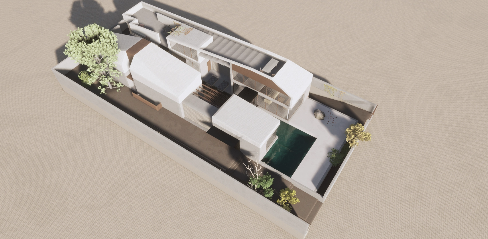

House in Vari is a 2 storey house with mezzanine, in the seaside region
of Vari, in Southeastern Athens. The proposal suggests a pool divided
house with a composition of indoor and outdoor spaces, in order to
create an introvert house model that multiplies the space within its
shell.
The brief consists of a ground floor with a living area, main kitchen
and the 2 bedrooms of the couple and their child, as the mezzanine gives
room to an office space and a guest room.
The rooftop is conceived to be a space of outdoor uses, such as yoga
practice area and dining area with a view, alongside with the necessity
of the solar panels, that covers 50% of the house energy consumption,
classified as A+.
Although the total coverage is nearly 245m2 and the total Built Area is
225m2, the house volume is stretched to the limits. The pool was a brief
millestone, as the routine of the couple covers swimming for a 20 minute
set.


